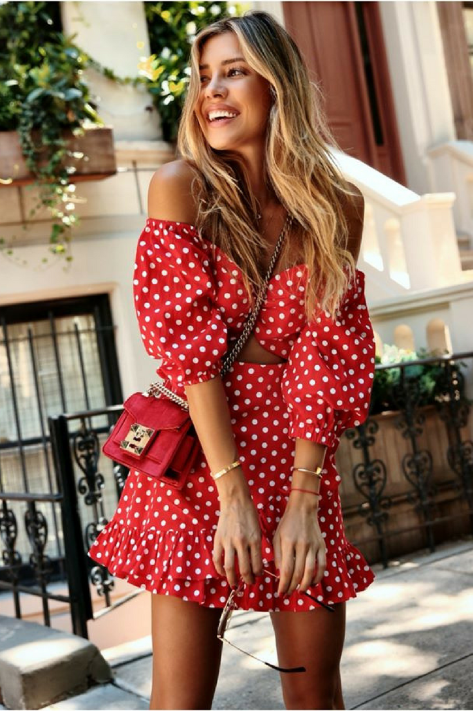
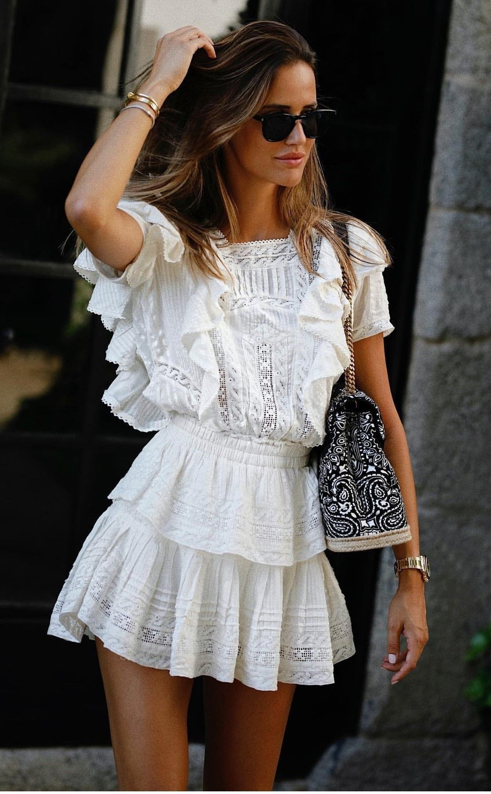
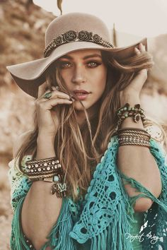
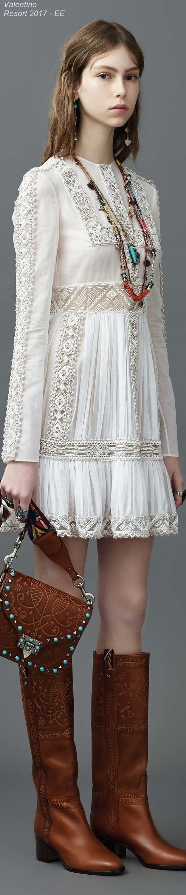

É hora de brilhar!!! Vamos nos inspirar nestes looks!
Por muito tempo, reservamos peças do guarda-roupa para datas comemorativas, como festas e grandes eventos.
Muitas mulheres abriram mão dessa divisão e passaram a usar no dia a dia tudo de mais incrível que tinham no armário.
Acesse Para obter maiores informações
As passarelas confirmaram esse desejo – de fazer de todo dia uma ocasião especial ...

No desfile da LV, o blazer de mangas curtas de paetês foi combinado à calça do mesmo material e a uma camiseta. A Burberry apresentou três belíssimos vestidos de cristais prateados enquanto...

A hora de brilhar é agora!!!
Aposte no look total misturando materiais; tem paetês, lurex, lamê, vinil, couro. Se ainda estiver experimentando e quiser algo mais discreto, escolha uma peça icônica.

A duquesa de Cambridge, Kate Middleton, e o príncipe William enviaram na segunda-feira, 25, uma mensagem para a equipe do NHS Tayside, o sistema de saúde escocês, agradecendo por todo o trabalho prestado.

Aderindo a um vestido xadrez vermelho de Emilia Wickstead, do qual a duquesa também fez uso no almoço de Natal da Rainha no Palácio de Buckingham em 2019
, Kate quebrou a regra da moda de inverno.
16 itens que foram a última moda nos anos 1990:
- clochard
- skynni
- jogger
- gargantilhas
- chokers
- colar cadeado
- esmalte preto
- coturno
- jeans rasgado
- casaco de pelo
- jaqueta
- tricô manga longa
- Funcionalidade
A peça é extremamente funcional e prática. Uma pochete que possua um tamanho médio pode caber inúmeras coisas que são necessárias para o dia a dia ou mesmo para ocasiões noturnas, não havendo a necessidade de uma bolsa grande. Além do fato da pochete deixar seus braços livres e com mobilidade.
- Versatilidade
As pochetes são muito versáteis e podem ser usadas de diferentes maneiras: a clássica ao redor da cintura, transpassada ou até mesmo pendurada no ombro. Além de poderem ser usadas em diferentes ocasiões e momentos do dia.
- Nas Passarelas
O acessório foi uma grande aposta de diversas marcas, em recentes desfiles das semanas de moda de Nova Iorque, Milão e Paris com formatos, cores e estampas variadas.
- Looks para Inspirar
Embora seja um acessório super clássico, pode parecer difícil utilizá-lo na composição de um look fashionista mas, exatamente pela praticidade e versatilidade mencionadas acima, ele pode ser facilmente adaptado aos seus looks diários, ajudando ainda a dar uma descontraída na produção.
Seja com jeans, com vestido ou até mesmo uma roupa mais séria, ela dá um toque mais despojado e moderno para qualquer look.
- COMO COMBINAR LOOKS COM JAQUETA DE COURO?
De material impermeável e extremamente resistente se bem cuidado, as jaquetas de couro nunca saem de moda. Além disso, combinam com qualquer estilo de qualquer garota, desde rocker a mais casual e até romântica dependendo do tingimento da peça.
- QUAL SEU ESTILO? ROCKER, ROMÂNTICA, CASUAL?
Você ainda pode combinar a jaqueta de couro com diversas peças para compor o look, por exemplo, vestido curto ou longo com estampa floral e bota para um estilo mais descolada romântica ou camiseta de banda e jeans destroyed para um look mais rocker.
- QUAL ACESSÓRIO USAR COM JAQUETA DE COURO?
Já nos acessórios preste mais atenção. Para uma pegada mais rocker aposte em peças de ródio negro ou com pedras pretas, e se tiver aplicações na jaqueta combine a cor dos acessórios com a cor das aplicações.
No uso dos colares o melhor é aposta em choker ou um mix de colares mais comprido, claro que essa opção também depende da gola que você vai utilizar por baixo da jaqueta. Aproveite e confira o post com dicas de como combinar seus acessórios Francisca Joias.
- Existe uma variedade grande de marcas que lançam modelos do material (sendo a Melissa a mais conhecida!), e o sucesso é tanto que até quem passou anos achando que plástico nos pés era cafona – como eu! – se rendeu às novidades
- Meus preferidos absolutos são os oxford (tenho dois), e gosto muito das sapatilhas também. Pra momentos descontraídos, são uma ótima opção pra dar uma mudada no look.
- Pra quem tem menos de vinte anos, é fácil usar, porque praticamente tudo é permitido com elas. Dá pra usar em diferentes ocasiões, de maneira formal ou bem divertida.
- Mas quem tem mais do que vinte não precisa se privar do plástico. É só usar com mais cuidado.
Use pra dar um toque diferente no look, mais moderno. Sapatos com texturas e detalhes inusitados complementam a produção, mas se a cor for muito vibrante ou o detalhe muito grande, procure manter o restante do look neutro, mais básico.
- Estampas, laços, pedras, essas pequenas fofurices podem transformar completamente o look.
No trabalho, o plástico deve ser mais “comportado”: modelos mais fechados (como um peep toe), com pouca pele aparecendo, e cores sóbrias.Pra não perder a elegância, dar preferência pra combinar com calça ou saias abaixo do joelho.
- Scrunchie – O Elástico de Cabelo Mais Descolado do Momento!Nos nos 80 e 90, eles eram conhecidos como frufru. Algumas pessoas também chamam de lacinhos, chiquinhas, amarrador… Enfim, esses elásticos de cabelos que estiveram presentes na infância e na adolescência da maioria das pessoas que nasceram antes dos anos 2000, voltaram a fazer parte do mundo da moda. Mas agora, o elástico de cabelo fofinho é conhecido como scrunchie e faz parte dos looks das principais it girls do momento!
- Às vezes não existe nada mais confortável e ao mesmo tempo moderno do que os rabos de cavalo. E nessas horas, nada melhor para compor os looks do que os elásticos para cabelos. Então, recentemente, esse acessório voltou a fazer parte das composições das it girls. Por isso, vamos te contar tudo o que você precisa saber sobre o scrunchie.
- O que é scrunchie?
Se você segue influenciadoras de moda e gosta de se manter por dentro das tendências, certamente já ouviu essa palavrinha… Então, para resumir scrunchie é um acessório para cabelo. A sua principal característica é ser um elástico de cabelo revestido de tecido, criando um aspecto “fofinho”. Além disso, um ponto interessante é que esses tecidos podem variar completamente. Então, esse elástico serve para fazer rabo de cavalo ou finalizar os coques
- Uma das coisas que mais vem crescendo durante a quarentena é a vontade de mudança, principalmente de ter o cabelo colorido, né? Vem que entregamos dicas e inspirações para passar pelo processo sem que você se arrependa depois!
- Quem tem acompanhado as redes sociais nesse período de quarentena já deve ter percebido que a mudança de cabelo é um dos tópicos mais falados por aí, certo? Seja para fazer a Britney 2007 e raspar a cabeça, ou para colorir o cabelo, testar as novidades é uma das coisas que mais vemos por aí nos últimos dias.
- Mas, mexer com o cabelo vai interferir diretamente na nossa autoestima, então mesmo estando de quarentena e não encontrando com ninguém fora do nosso convívio, é bom pensar duas vezes antes de ir para uma mudança como essa. Para quem está com medo de arriscar, pode começar com algumas mechas no cabelo e depois aumentar se gostar do resultado. E, se não gostar, só pintar de novo para voltar para uma cor próxima do seu natural. não é mesmo?
- E por que queremos tanto fazer essa mudança principalmente agora que estamos em quarentena? Isso pode ser um jeito de você lidar não só com o tédio de não fazer todas as coisas que fazia antes, mas também de ser uma resposta interna de desejo de mudança para lidar com tudo isso. E nada melhor do que esse momento para experimentar, né?
- O top cropped é aquela blusa mais curtinha. Encontrado em diversos modelos, dá para compor looks descontraídos e até mesmo elegantes com a peça: independente do seu estilo, dá para incluí-la no seu visual.
- O top cropped assume um lugar essencial no closet das fashionistas seja acompanhado de uma calça, short ou saia, contudo, o cropped tem um estilo moderno e cool.
- Podendo ser arrematada com conjuntinhos, para compor um look monocromático ou usar por baixo do blazer. Além disso, a peça cria composições elegantes e contemporâneos.
- Trata-se de uma mini blusa, que pode ser tanto larga, quanto justa.Embora seja considerada uma peça polêmica, a dica para usar o cropped é investir em peças de cintura alta para fazer composições mais delicadas e cool.
- O estilo gótico surgiu nos anos 80 pela influencia das musicas punk e rock. Nos anos 90, ele voltou a aparecer influenciado pelo estilo grunge, muito associado à banda Nirvana. O estilo se caracterizou pelo uso de roupas escuras e uma aparência sombria.
- Recentemente surgiu uma releitura do estilo gótico, que se popularizou pela internet, sendo a sua versão suave. Essa tendência atual, que também recebe o nome de
pastel goth
, tem muito mais a ver com a própria moda do que com influencias musicais. O estilo mantém a origem sombria, como o gótico original, porem ganhou uma versão mais leve, e sem duvidas mais adaptável para o clima tropical.
- Diferentes peças e acessórios podem compor um visual gótico. Saiba como criar seus looks com diferentes peças e para diferentes temperaturas, com a ajuda das dicas elaboradas em parceria com a consultora de moda Flávia Piña, fundadora da F. Pina Moda e Imagem.
- Depois do filme
As Patricinhas de Beverly Hills
, de 1995, o acessório virou febre e ganhou diferentes versões em todos os tamanhos e tipos de materiais
- Os mullets estão de volta e provam que, sim,
é bonito ser feio em 2020.
- Assim como a pochete, já taxada como brega por muitos e marcada pelo retorno memorável ao streetwear, o penteado foi colocado na caixinha do que é cafona, mas fez sua reviravolta e se tornou uma tendência no cabelo de homens e mulheres.
- Uma das principais razões para o mullet ter voltado foi a quarentena. Ir ao cabeleireiro com frequência se tornou improvável com o confinamento e os fios que cobrem a nuca cresceram e, aos poucos, foram adaptados ao visual — digo isso por experiência própria.
- "A quarentena fez com que as pessoas, deixando o cabelo crescer, fossem se entendendo com o próprio cabelo", conta ele a Nossa. "Eu fui um dos que se adequou rápido à moda do mullet. Tenho muito dessa referência dos anos 90, como em 'Barrados no Baile', por exemplo".
- Listra
As listras surgem em propostas variadas no vestuário plus size. Buscando referência na estética navy, destaque para as opções com fundo branco em listras em azul celeste e azul-marinho. Repare que as peças ganham um visual leve através dos fundos claros, sempre combinados a bases naturais, como algodão e linho.Com um viés mais despojado, as listras irregulares também chamam a atenção, podendo mesclar duas, três ou mais cores. Visando alongar a silhueta, as linhas verticais são a principal alternativa, ganhando um efeito interessante em peças de grande movimento, como saias mídis e vestidos longos.
- PoáO visual retrô do poá é um dos pontos altos da estamparia na temporada. O padrão varia entre escalas amplas e micros, sempre aparecendo em toda a extensão de peças como tops cropped, vestidos e macacões.Repare que as peças normalmente trazem o romantismo muito presente nas modelagens, valorizando cortes evasês, babados, mangas bufantes e amarrações.
A clássica combinação preto e branco é chave para as criações, trazendo principalmente o preto como base. Os coloridos, por sua vez, ressaltam um visual mais veranil, brincando com uma cartela que vai do verde menta até o laranja. Para manter um viés mais comercial, as cores são sempre utilizadas junto ao branco nas padronagens.
- Preparadas para mais um post sobre a história de um calçado bastante famoso? Hoje o nosso assunto é: Keds! Vocês sabiam que eles foram o primeiro tênis de lona com solado de borracha do mundo? Sim, antes de qualquer Vans ou All Star. Ele foi lançado em 1916 pela U.S. Rubber Company.
- Existem duas boas histórias para contar sobre ele. A primeira: antes de se tornar Keds, a empresa queria lançá-lo com o nome Peds, por causa da palavra “pé” no latim, mas já estava registrada. Então, a dúvida ficou entre dois nomes, KEDS ou VEDS. O motivo da escolha por Keds é simplesmente pela sua sonoridade. O som do K é mais mais marcante.
- A segunda história é relacionada ao nome sneakers, que foi lançada numa campanha publicitária da marca. A palavra “sneak”, em inglês, quer dizer espiar, esgueirar. Por causa do solado de borracha, os tênis eram silenciosos, logo, ideais para ~espiar~. Daí vem o nome sneakers para todo tênis com o mesmo solado. O solado de borracha para a época era um conceito muito inovador. Até então, os calçados eram feitos com solado de couro. A nova abordagem era mais confortável, maleável e até atlética, e combinava bastante com o estilo de vida dos americanos.
- Durante as décadas seguintes, ele caiu cada vez mais no gosto do público. Da segunda metade do século XX para frente, os tênis foram usados por celebridades como Audrey Hepburn, Marilyn Monroe e Jacqueline Kenedy, além de ser pauta para várias revistas de moda, como a Vogue. Difícil não se tornar um clássico americano depois disso, né? E para alavancar ainda mais esse sucesso, em 1987, a atriz principal (Jennifer Grey) aparece em várias cenas no filme Dirty Dancing usando um par de Keds branco.
- Ok, ok. Agora que vocês já conhecem um pouco sobre a história do Keds, que tal ideias de como usá-lo? Olha, eu sou muito suspeita para falar dele, porque adoro. Para mim, ele é o mais versátil e delicado tênis de todos (se compararmos com All Star e Vans, por exemplo), porque ele é o único que você conseguirá usar sem meia sem precisar machucar os pés. Sem a meia, a combinação Keds + vestidos/saias/shorts fica perfeita. Sem contar que ele com uma calça cropped também fica incrível.
- Outra coisa que adoro nos Keds é que eles possuem inúmeras cores, estampas e estilos para agradar qualquer um. E eles não poderiam ter acertado mais na parceria com a Taylor Swift – cada modelo mais fofo que o outro. Um bom calçado para usar em qualquer hora do dia, em qualquer estação e sem medo de estar confortável. :)
- A função deste aparelho era reunir todos os seu contatos na memória em vez de ter que anotá-los em uma agenda de papel. Também era possível memorizar seus compromissos nela. Ficaram obsoletas com a chegada do smartphones.
- Ursinho, coelhinho, patinho, gatinho… Toda menina descolada ia pra escola com uma mochila de bicho de pelúcia (e a mochila normal tb, pq afinal, não cabia nada na de pelúcia hahaha). Com o tempo, nós meninas, começamos a customizar essas mochilas. A gente botava band-aid, lacinho, óculos de sol, chupeta, alfinete e outras tranqueiras pra decorar o urso.
- Eu tenho que confessar, eu tinha um urso rosa de recheio murcho, MUITOOOO do paraguaio aheuiahueihaue Morria de vergonha! Dp minha irmã ganhou um urso marrom lindo e cabeçudo, e eu dava umas roubadinhas.
Agora iremos fazer um giro sobre as séries do momento, e a moda retratada em cada uma delas
Bridgerton
Mad Men
Downtown Abbey
Gossip Girl
Download do livro em pdf
Download do livro zipado
Baixar conteúdo
Baixar conteúdo zipado
Download do conteúdo
Baixar conteúdo